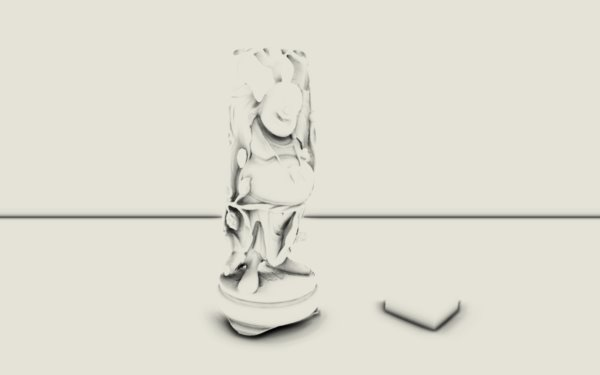

Projects
-

Arkose Renderer — A flexible rendering engine for real-time graphics R&D
My long running real-time rendering engine project with modern features such as bindless rendering, GPU-driven rendering, and ray tracing. Supports multiple graphics backends (for now Vulkan & D3D12).
-
Master's thesis — Evaluating the use of proxy geometry for real-time ray traced diffuse global illumination on RTX hardware & APIs
A short post about my master's thesis that I did during the spring of 2020.
-
Prospect — real-time renderer
My previous real-time rendering project (using C++ & OpenGL). The code isn't the prettiest since I have focused on flexibility instead of nice abstractions. However, it does have a lot of features & it generates quite nice images!
-
Real-time global illumination in web browsers
Bachelor thesis on said subject. Me and five other people implemented and evaluated three modern real-time global illumination techniques in WebGL 2.0. The thesis can be found here!
-
Traceratops — path tracer
A very basic CPU path tracer. It was mostly developed for the purpose of learning how it works (back in 2018), so in terms of performance & nice-to-have features not much has been done.
-
A somewhat physically based raymarcher
A basic shadertoy example/template of 3D raymarching with materials that are somewhat physically based. Features include: multiple bounces and IBL for last bounce, multiple materials, and soft shadows.
-

SSAO demo
An old screen space ambient occlusion (SSAO) demo using the normal‑oriented hemisphere kernel method.
-
GPU particle simulation
A simple interactive gravity based particle system simulation with 200 000 particles. Made in WebGL 2.0 using transform feedback.
-
Chinese checkers AI
A 2-player chinese checkers game where you play against an AI. It's not very advanced, but it's still a pretty good oponent! Made by me and three other as a school project. The code is available here!